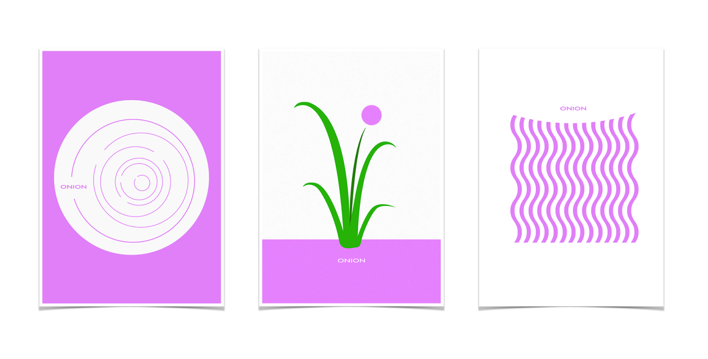
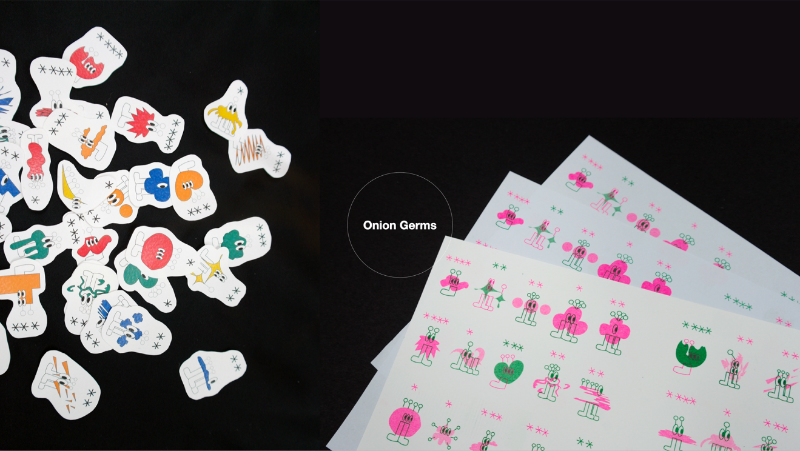
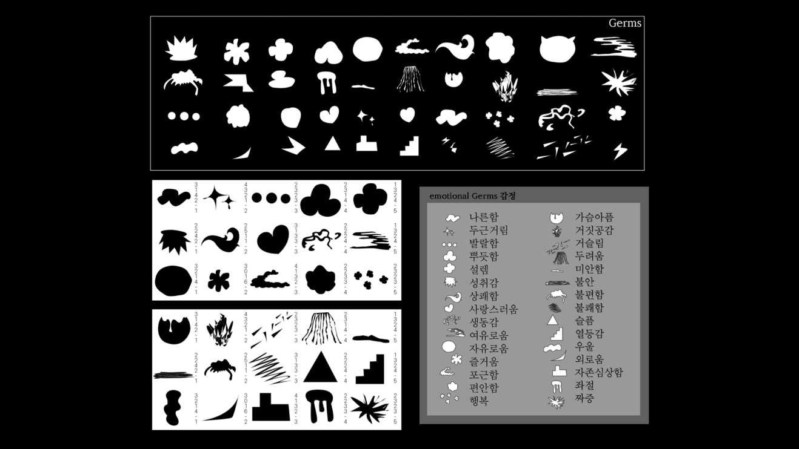
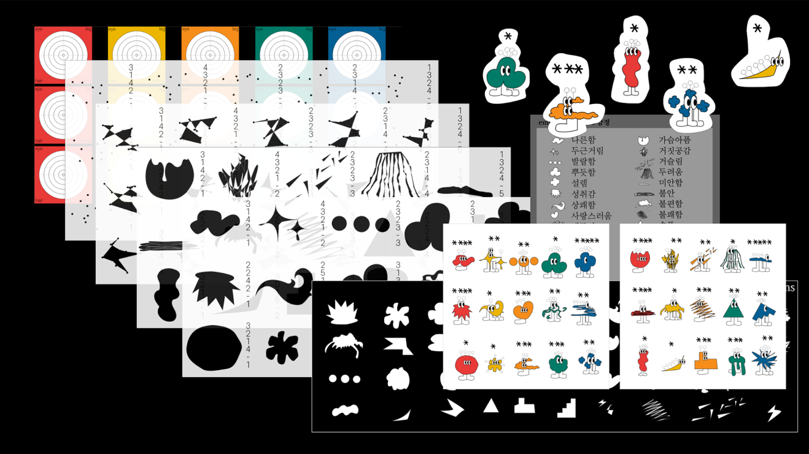
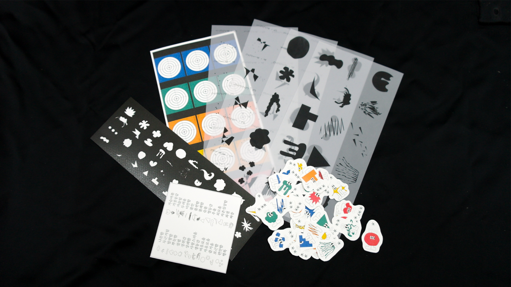
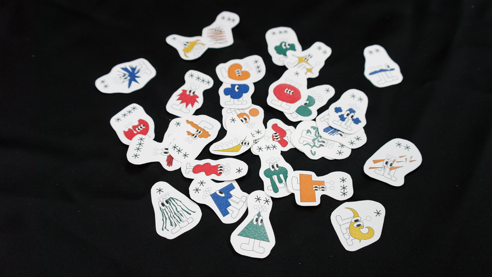
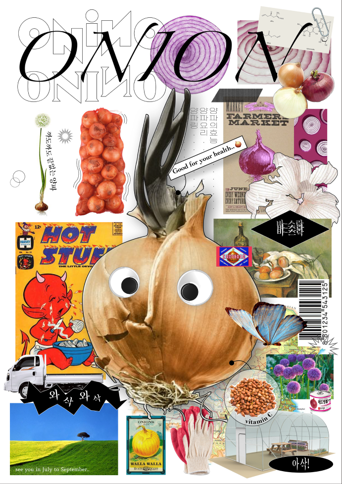

Project
Contact
@hong_work.ing
Designer
Vegetable
홍은진
ONION
Category
Minimal Poster / Maximal Poster / Generative System
아삭아삭하고 둥글둥글, 까도까도 끝없는 다양함을 가진 양파를
나를 상징하는 야채로 선정하여 프로젝트를 진행하였다.
MINIMAL POSTER
MAXIMAL POSTER
ONION GERMS
Poster
Poster
Poster
미니멀일수록 본질에 가까워야 한다고 생각했다.
가장 본질과 가까웠을 어린아이 시절을 떠올리며, 양파의 각 부분을 동화책 삽화처럼 표현하였다.
크기도 작게 인쇄하여 정말 ‘미니’멀한 포스터로 제작하였다.
야채에 있어 맥시멈이란 수명을 다하기 전까지 그것의 영향력을 많은 곳에 끼치는 것일 테다.
그 과정을 이미지의 마인드맵처럼 구성하였다. 여러 사람들이 사용한 기법을 콜라주 하는 것도 작업에서의 맥시멈이라
생각되어, 양파를 표현하는 여러 이미지들을 한 곳에 담아보았다.
양파처럼 복잡하고 다양한 사람의 감정을 캐릭터로 만들었다.
시스템에 따라서 각자 다른 자신만의 캐릭터를 만들어낼 수 있다.






